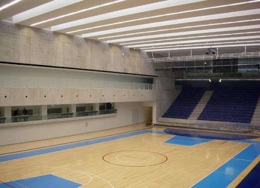

MeetTheCircle
@JoaoMoura publicou em
MIEIC16/17
Ms sdiwe asud ah .
@JoaoMoura publicou em
Trip17
Ms sdiwe asud ah .
@JoaoMoura publicou em
FutePorto
Ms sdiwe asud ah .

Logout
About
Services
Clients
Contact